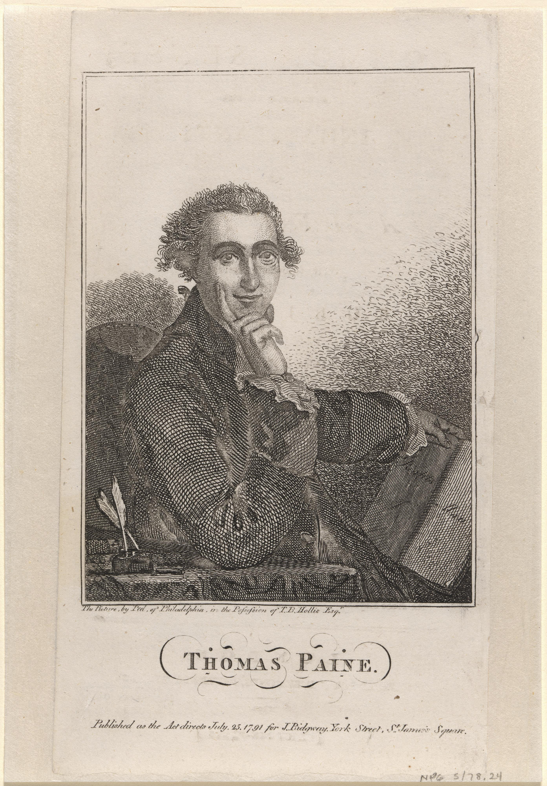
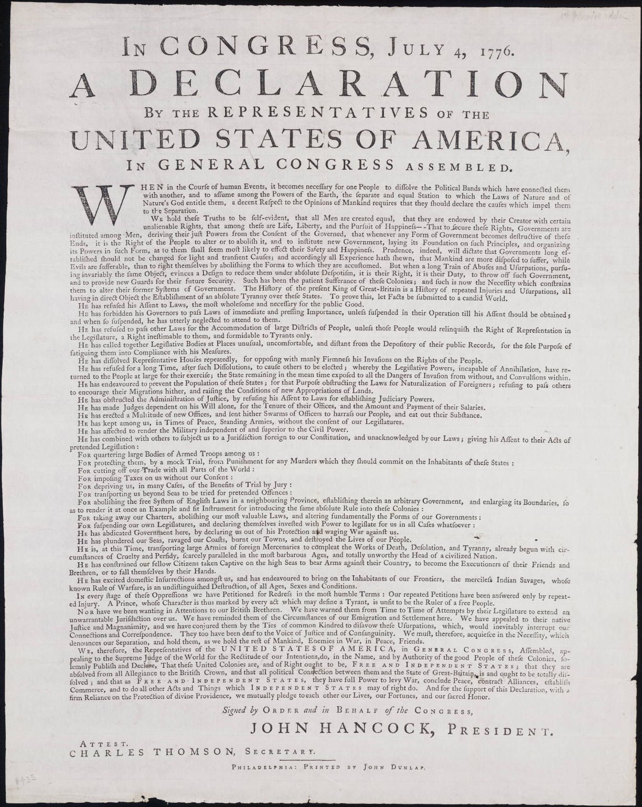

Directions: Your group has the argument file. Each station holds one record from the quarrel of 1775 and 1776. For every record, state its claim about where legitimate government comes from. Work through the five stations in order, then deliver the closing verdict in Part 2.
Source: Thomas Paine, Common Sense, 1776 (Project Gutenberg; from the February 14, 1776 Philadelphia edition). Audited TPSP bank record, paine-common-sense-1776. Cuts are marked with ellipses. Paine's spelling is as the edition carries it.
The cause of America is in a great measure the cause of all mankind. Many circumstances hath, and will arise, which are not local, but universal, and through which the principles of all Lovers of Mankind are affected, and in the Event of which, their Affections are interested.
...
Society in every state is a blessing, but government even in its best state is but a necessary evil; in its worst state an intolerable one; for when we suffer, or are exposed to the same miseries by a government, which we might expect in a country without government, our calamity is heightened by reflecting that we furnish the means by which we suffer.
...
We have it in our power to begin the world over again. A situation, similar to the present, hath not happened since the days of Noah until now. The birthday of a new world is at hand, and a race of men, perhaps as numerous as all Europe contains, are to receive their portion of freedom from the event of a few months. The Reflexion is awful, and in this point of view, How trifling, how ridiculous, do the little, paltry cavellings, of a few weak or interested men appear, when weighed against the business of a world.

Claim about legitimate government: ____________________________
State Paine's contrast in his own words. What does he call society in every state, and what does he call government even in its best state? Then state what follows, in his argument, when a government produces the same miseries a country without government would produce.
Paine opens by calling the cause of America the cause of all mankind and closes by saying Americans have it in their power to begin the world over again. State what those two claims ask a wavering reader to give up, and name the form of government they point him toward instead of a king.
Source: Thomas Jefferson, Jefferson's Rough Draft of the Declaration, 1776 (H. A. Washington, ed., The Writings of Thomas Jefferson, 1853; via Teaching American History). Audited TPSP bank record, jefferson-rough-draft-1776. The bank record presents selected grievances from the draft, with its cuts marked. Jefferson's capitals are as the edition carries them.
He has plundered our seas, ravaged our coasts, burnt our towns, and destroyed the lives of our people. [...]
He has waged cruel war against human nature itself, violating its most sacred rights of life and liberty in the persons of a distant people who never offended him, captivating and carrying them into slavery in another hemisphere or to incur miserable death in their transportation thither. This piratical warfare, the opprobrium of INFIDEL powers, is the warfare of the CHRISTIAN king of Great Britain. Determined to keep open a market where MEN should be bought and sold, he has prostituted his negative for suppressing every legislative attempt to prohibit or to restrain this execrable commerce. And that this assemblage of horrors might want no fact of distinguished die, he is now exciting those very people to rise in arms among us, and to purchase that liberty of which he has deprived them, by murdering the people on whom he also obtruded them: thus paying off former crimes committed against the LIBERTIES of one people, with crimes which he urges them to commit against the LIVES of another.
Claim about legitimate government: ____________________________
State the deleted passage's charge in full. What had the king waged cruel war against, what market was he determined to keep open, quote his words for it, and what legislative attempts had he blocked?
The passage ends by setting the liberties of one people against the lives of another. State which people holds each side of that pairing in Jefferson's sentence, and state what Congress did with the whole passage before July 4 and why the record shows it fell.
Source: Thomas Jefferson (for the Continental Congress), Declaration of Independence, 1776 (National Archives). Audited TPSP bank record, declaration-of-independence, for the preamble passage. The grievances and the conclusion are from the National Archives transcription of the engrossed parchment. Cuts are marked with ellipses. Spelling and punctuation are as the transcription carries them.
We hold these truths to be self-evident, that all men are created equal, that they are endowed by their Creator with certain unalienable Rights, that among these are Life, Liberty and the pursuit of Happiness.--That to secure these rights, Governments are instituted among Men, deriving their just powers from the consent of the governed, --That whenever any Form of Government becomes destructive of these ends, it is the Right of the People to alter or to abolish it, and to institute new Government, laying its foundation on such principles and organizing its powers in such form, as to them shall seem most likely to effect their Safety and Happiness. Prudence, indeed, will dictate that Governments long established should not be changed for light and transient causes; and accordingly all experience hath shewn, that mankind are more disposed to suffer, while evils are sufferable, than to right themselves by abolishing the forms to which they are accustomed. But when a long train of abuses and usurpations, pursuing invariably the same Object evinces a design to reduce them under absolute Despotism, it is their right, it is their duty, to throw off such Government, and to provide new Guards for their future security.
He has refused his Assent to Laws, the most wholesome and necessary for the public good. ... For imposing Taxes on us without our Consent: ... He has plundered our seas, ravaged our Coasts, burnt our towns, and destroyed the lives of our people. He is at this time transporting large Armies of foreign Mercenaries to compleat the works of death, desolation and tyranny, already begun with circumstances of Cruelty & perfidy scarcely paralleled in the most barbarous ages, and totally unworthy the Head of a civilized nation. He has excited domestic insurrections amongst us, and has endeavoured to bring on the inhabitants of our frontiers, the merciless Indian Savages, whose known rule of warfare, is an undistinguished destruction of all ages, sexes and conditions.
... That these United Colonies are, and of Right ought to be Free and Independent States; that they are Absolved from all Allegiance to the British Crown, and that all political connection between them and the State of Great Britain, is and ought to be totally dissolved ...

Claim about legitimate government: ____________________________
State the preamble's theory in its own order. What rights does it name, who endows them, where do governments derive their just powers, and what may the people do when a government becomes destructive of those ends?
Every grievance at this station names the king. Quote the document's own words for the closing charge about the frontiers, and state what people the phrase names in plainer language. Then state what the conclusion declares the colonies to be, and what they are absolved from.
Source: King George III, Proclamation Suppressing Rebellion and Sedition, 1775 (Encyclopedia Virginia; from the National Archives). Audited TPSP bank record, king-proclamation-rebellion-1775. Cuts are marked with ellipses. The king's spelling and capitals are as the edition carries them.
WHEREAS Many of Our Subjects in divers Parts of Our Colonies and Plantations in North America, misled by dangerous and ill-designing Men, and forgetting the Allegiance which they owe to the Power that has protected and sustained them, after various disorderly Acts committed in Disturbance of the Public Peace, to the Obstruction of lawful Commerce, and to the Oppression of Our loyal Subjects carrying on the same, have at length proceeded to an open and avowed Rebellion, by arraying themselves in hostile Manner to withstand the Execution of the Law, and traitoroursly preparing, ordering, and levying War against Us.
... We have thought fit, by and with the Advice of Our Privy Council, to issue this Our Royal Proclamation, hereby declaring that not only all Our Officers, Civil and Military, are obliged to exert their utmost Endeavours to suppress such Rebellion, and to bring the Traitors to Justice; but that all Our Subjects of this Realm and the Dominions thereunto belonging are bound by Law to be aiding and assisting in the Suppression of such Rebellion, and to disclose and make known all traitorous Conspiracies and Attempts against Us, Our Crown and Dignity.
Claim about legitimate government: ____________________________
State the king's account of how the rebellion began. Who had misled the colonists, what had the colonists forgotten, and what does he say they have at length proceeded to? Quote his words for the state of rebellion.
State what the proclamation obliges officers and loyal subjects to do, and then state, in one sentence, where legitimate authority sits in this document's claim and what a subject owes it.
Source: Second Continental Congress, Olive Branch Petition, 1775 (National Humanities Center; spelling modernized). Audited TPSP bank record, olive-branch-petition-1775. Cuts are marked with ellipses.
Your Majesty's Ministers, persevering in their measures, and proceeding to open hostilities for enforcing them, have compelled us to arm in our own defense, and have engaged us in a controversy so peculiarly abhorrent to the affections of your still faithful Colonists that, when we consider whom we must oppose in this contest and, if it continues, what may be the consequences, our own particular misfortunes are accounted by us only as parts of our distress.
...
Attached to your Majesty's person, family, and government, with all devotion that principle and affection can inspire; connected with Great Britain by the strongest ties that can unite societies, and deploring every event that tends in any degree to weaken them, we solemnly assure your Majesty that we not only most ardently desire the former harmony between her and these Colonies may be restored, but that a concord may be established between them upon so firm a basis as to perpetuate its blessings, uninterrupted by any future dissensions, to succeeding generations in both countries [...]
...
We therefore beseech your Majesty that your royal authority and influence may be graciously interposed to procure us relief from our afflicting fears and jealousies occasioned by the system before-mentioned, and to settle peace through every part of our dominions ... and that such statutes as more immediately distress any of your Majesty's Colonies may be repealed.
Claim about legitimate government: ____________________________
The petition blames the king's ministers for open hostilities and professes attachment to the king himself. Quote the words in which Congress professes that attachment, and state who, in the petition's account, compelled the colonists to arm.
State what Congress beseeches the king to interpose his royal authority to procure, and state the kind of statutes it asks to have repealed. Then state what this document never threatens, and what that silence cost its argument by June 1776.
Your group has read five records of one quarrel: a pamphlet, a draft and its deletion, the adopted Declaration, the king's answer, and the petition that tried to prevent all of it. First complete the table from your station work, then judge the file as a whole.
| Record | Its claim about where legitimate government comes from, in one line |
|---|---|
| Station 1: Common Sense | |
| Station 2: The rough draft | |
| Station 3: The Declaration as adopted | |
| Station 4: The Proclamation of Rebellion | |
| Station 5: The Olive Branch Petition |
Most persuasive to a wavering colonist in June 1776 (station number and record): ____________________________
Least persuasive (station number and record): ____________________________
In a short paragraph, deliver your verdict. Name the single record your group judges would most persuade a wavering colonist in June 1776, and defend the judgment from the documents: quote or name the evidence in that record, and state what it would have to overcome in him, his loyalty, his fear of treason, or his hope of reconciliation. Then name the record that would persuade him least and say why its claim had already failed by June 1776.
Claim about legitimate government. Government is a necessary evil that society creates and may judge; kings hold no natural or divine title, and a people may begin the world over again under a government of its own making.
State Paine's contrast. Society in every state is a blessing, but government even in its best state is but a necessary evil, and in its worst state an intolerable one. When a people suffer by a government the same miseries they might expect in a country without government, their calamity is heightened because they furnish the means by which they suffer. A government that adds suffering instead of restraining it has failed the only test Paine allows it.
State what the two claims ask the reader to give up. The opening line makes the quarrel universal, the cause of all mankind, so the reader must give up the idea that this is a local tax dispute to be patched by petition. The closing line gives him a founding to perform instead, a new world whose birthday is at hand, which asks him to give up reconciliation and hereditary kingship together. The form of government the claims point toward is a republic, a state governed by representatives chosen by its citizens under law, without a king.
Claim about legitimate government. Even inside a list of royal crimes, Jefferson's draft holds the king to the rights of people who were never his subjects by consent: a king who wages war on human nature itself has broken the standard by which any government is judged.
State the deleted charge in full. The king had waged cruel war against human nature itself, violating its most sacred rights of life and liberty in the persons of a distant people who never offended him, captivating and carrying them into slavery in another hemisphere or to incur miserable death in their transportation thither. He was determined to keep open a market where MEN should be bought and sold. He had prostituted his negative for suppressing every legislative attempt to prohibit or to restrain this execrable commerce, blocking the colonial laws meant to end the trade.
State the pairing, the cut, and the reason. The last sentence sets the LIBERTIES of one people, the enslaved Africans the king had carried across the Atlantic, against the LIVES of another, the colonists he was now urging those same people to rise against. Congress struck the whole passage before adopting the Declaration on July 4. The record shows it fell because South Carolina and Georgia would not accept it and northern delegates tied to ports that profited from the slave trade would not press it. Students should also register the passage's own limit: it blames the king for a trade the colonies bought from, and it asks pity for enslaved people as victims while fearing them as a weapon.
Claim about legitimate government. Governments are instituted among men to secure unalienable rights and derive their just powers from the consent of the governed; a government destructive of those ends may be altered or abolished by the people.
State the preamble's theory in order. All men are created equal and are endowed by their Creator with certain unalienable Rights, among them Life, Liberty and the pursuit of Happiness. Governments are instituted to secure these rights, deriving their just powers from the consent of the governed. Whenever any form of government becomes destructive of these ends, it is the right of the people to alter or abolish it and institute new government. The preamble pairs the right with a caution: governments long established should not be changed for light and transient causes, which is why the grievances must follow.
Quote the closing charge and state the conclusion. The document's words are that he has endeavoured to bring on the inhabitants of our frontiers, the merciless Indian Savages, whose known rule of warfare, is an undistinguished destruction of all ages, sexes and conditions. In plainer language the phrase names Native nations allied with Britain, and students should hold it beside the preamble's claim that all men are created equal, inside one document. The paired charge charges the king with excited domestic insurrections, meaning Dunmore's offer of freedom to enslaved people. The conclusion declares that these United Colonies are, and of Right ought to be Free and Independent States, absolved from all Allegiance to the British Crown, with all political connection to Great Britain totally dissolved.
Claim about legitimate government. Authority descends from the Crown, allegiance is owed to the power that has protected and sustained the colonies, and resistance to the execution of the law is treason to be suppressed and punished.
State the king's account. Many of his subjects, misled by dangerous and ill-designing Men, and forgetting the Allegiance which they owe to the Power that has protected and sustained them, have at length proceeded to an open and avowed Rebellion, arraying themselves in hostile manner and traitorously preparing, ordering, and levying war against him. The colonists in this account have no grievance a king must answer; they have a duty they have broken.
State the obligation. All officers, civil and military, are obliged to exert their utmost endeavours to suppress the rebellion and bring the traitors to justice, and all subjects are bound by law to aid in the suppression and to disclose every traitorous conspiracy and correspondence they know of. In one sentence: legitimate authority sits in the Crown alone, and a subject owes it obedience, assistance, and information against the rebels. Students should note the date, August 23, 1775: the king declared the colonies in rebellion while the Olive Branch Petition was still crossing the Atlantic, and he refused to receive it when it arrived, which is the sequence Station 5 tests.
Claim about legitimate government. The king is the rightful sovereign and the living bond of the empire; the quarrel is with his ministers' measures, and the king's authority, interposed, can restore harmony without dissolving allegiance.
Quote the attachment and state who compelled the arming. Congress professes itself attached to your Majesty's person, family, and government, with all devotion that principle and affection can inspire, connected with Great Britain by the strongest ties that can unite societies. In the petition's account it was your Majesty's Ministers, persevering in their measures and proceeding to open hostilities for enforcing them, who compelled the colonists to arm in their own defense.
State the request and the silence. Congress beseeches the king to interpose his royal authority and influence to procure relief from the colonists' afflicting fears and jealousies and to settle peace through every part of his dominions, and asks that such statutes as more immediately distress any of his Majesty's Colonies may be repealed. The document never threatens separation, conditions its loyalty, or sets a consequence if the king refuses. By June 1776 that silence had cost it everything: the king had answered with the Proclamation of Rebellion and the Prohibitory Act, and Paine had taught the wavering to read continued loyalty as submission to a king who made war on them.
Full credit answers will differ in their ranking. The strongest verdicts usually place Station 1 or Station 3 at the top: Common Sense, because it alone spoke to the wavering colonist before he was a delegate, in language he already used, and gave him a world to gain rather than a crime to commit; or the Declaration, because its preamble turned his private doubts into a public theory and its grievances answered the caution its own preamble set. Station 5 is the usual least choice: by June 1776 the king had already refused the petition's premise, and a document that threatens nothing cannot move a man whom events have already moved past it. A student may argue Station 4 persuaded least among colonists but most toward independence, by proving Paine's point, and credit that reasoning when the documents carry it.
Full credit for the paragraph should be awarded if the student: